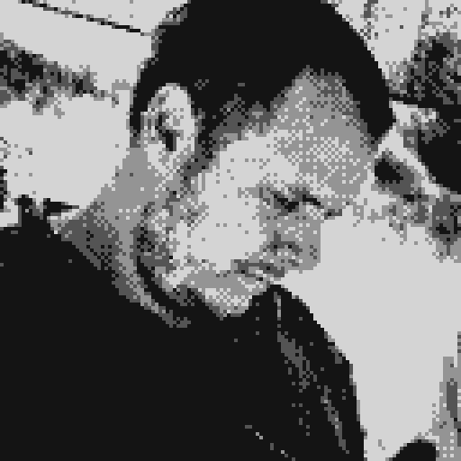

Velkommen til mit site!

Hej, jeg hedder Mikkel og laver webdesign. Siden, du er kommet ind
på, er min hyldest til de computere jeg voksede op med, og foran
hvilke jeg tilbragte en stor del af min barndom. Siden indeholder de
forskellige projekter jeg har arbejdet på i løbet af 1. semester på
Multimedie Designer Udannelsen på KEA. Jeg håber at du vil klikke
rundt, og være med på min rejse ind i webdesign-verdenen!
Har du lyst til at hyre mig til et projekt, eller vil du bare have
en sludder, så smid mig en mail på
mikkel@codemonkey.computer, så vender jeg tilbage til dig.